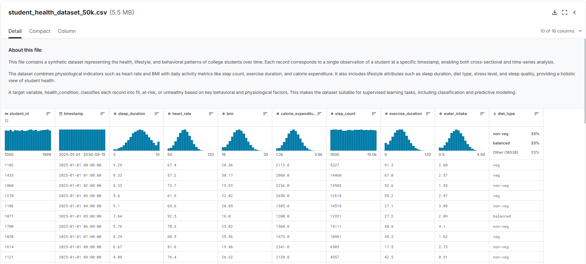
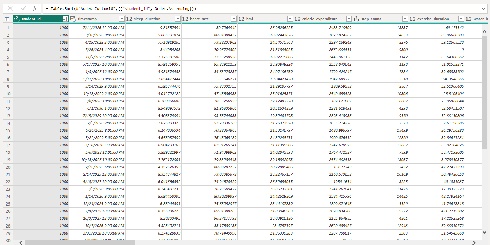
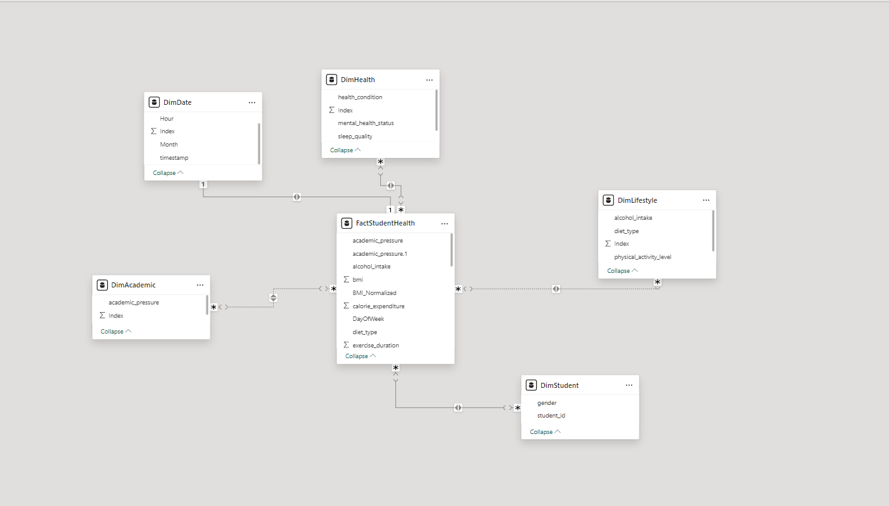
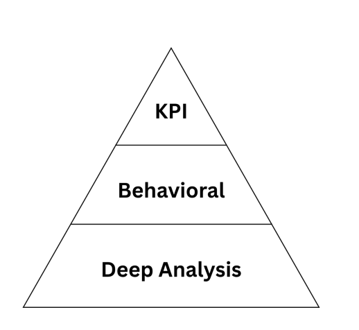
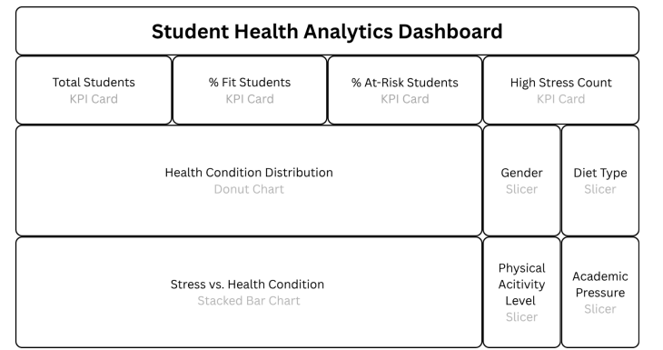
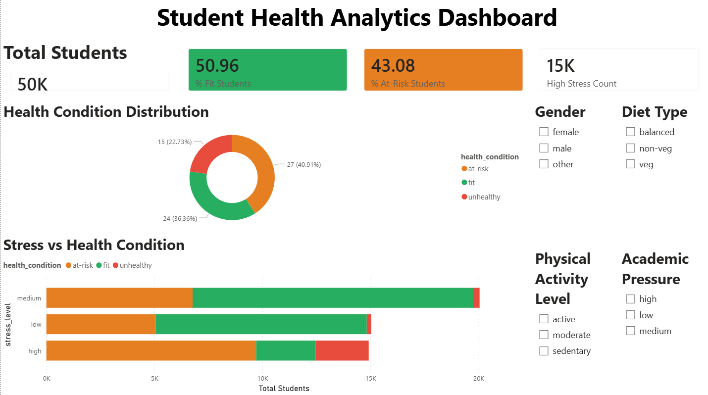
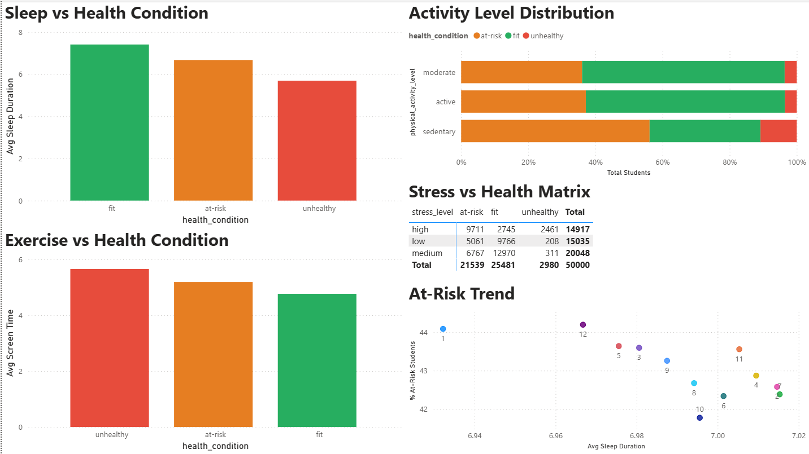
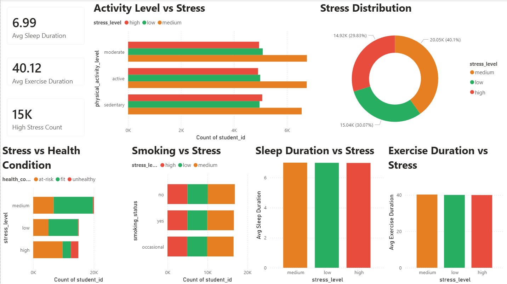
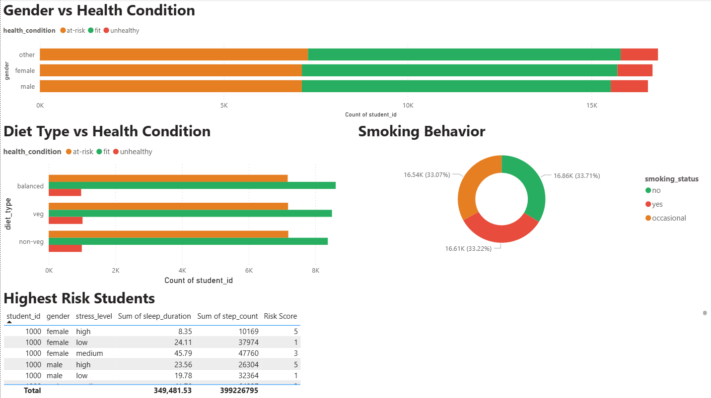

A comprehensive Power BI dashboard analyzing behavioral, physical, mental, and academic health indicators from 50,000 student health records.
This project analyzes student wellness data to identify major health risk factors and deliver data-driven recommendations for school administrators and health counselors. Built using Microsoft Power BI Desktop with a structured star schema and DAX-powered KPIs.
| Category | Metrics Tracked |
|---|---|
| Physical | Sleep duration, BMI, heart rate, step count |
| Lifestyle | Exercise duration, water intake, screen time |
| Mental | Stress level, mental health status |
| Academic | Academic pressure level |
| Demographic | Gender, diet type, smoking status |
The dataset was imported into Microsoft Power BI Desktop using the built-in Text/CSV connector. Although 100,000 records were suggested in the project brief, the 50,000-record dataset remains sufficiently large for statistical analysis and dashboard modeling due to its dense, multi-dimensional student health observations.
Launch the application and navigate to the Home ribbon to begin the data import process.
Select Home → Get Data → Text/CSV to load the dataset file.
Import enhanced_student_health_dataset_50k.csv and verify UTF-8 encoding with comma delimiter.
Send the dataset to Power Query Editor to begin preprocessing and transformations.
| Attribute | Details |
|---|---|
| File Name | enhanced_student_health_dataset_50k.csv |
| Total Records | 50,000 |
| Total Columns | 22 |
| File Type | CSV (Comma-Separated Values) |
| Data Type | Structured Tabular Dataset |
| Target Variable | health_condition — Fit / At-Risk / Unhealthy |
| Source | Kaggle — College Student Health Behavior Dataset |
| Column Name | Description | Type |
|---|---|---|
student_id | Unique student identifier | Text |
sleep_duration | Hours of sleep per night | Decimal |
heart_rate | Heart rate in BPM | Whole Number |
bmi | Body Mass Index | Decimal |
step_count | Daily steps taken | Whole Number |
exercise_duration | Exercise duration in minutes | Whole Number |
water_intake | Water intake in liters | Decimal |
screen_time | Daily screen exposure in hours | Decimal |
sitting_time | Daily sitting hours | Decimal |
stress_level | Low / Medium / High | Text → Encoded 1/2/3 |
sleep_quality | Poor / Fair / Good | Text → Encoded |
physical_activity_level | Sedentary / Moderate / Active | Text → Encoded |
mental_health_status | Stable / Moderate / Poor | Text |
academic_pressure | Low / Medium / High | Text → Encoded |
smoking_status | Yes / No / Occasional | Text |
diet_type | Balanced / Non-Veg / Veg | Text |
gender | Male / Female / Other | Text |
health_condition | Fit / At-Risk / Unhealthy (target) | Text → Encoded |

[ Replace with: Data Set Import Screenshot ]Recommended size: 1280×720px
The CLEAN Framework is a data preprocessing and quality framework ensuring datasets are accurate, complete, consistent, and analytically reliable before visualization and modeling. Each component addresses a specific quality dimension critical to Power BI dashboard accuracy.
| Component | Full Name | Purpose | Implementation in Project | Result |
|---|---|---|---|---|
| C | Completeness | Ensure no missing values | Column Quality View in Power Query Editor | 100% valid — no nulls found |
| L | Legitimacy | Validate records and numeric ranges | Remove Duplicates + range validation on BMI, sleep, heart rate | No duplicates, all ranges valid |
| E | Efficiency | Optimize structure and data types | Assigned Date/Time, Whole Number, Decimal, Text types; derived Hour, Month, DayOfWeek columns | Optimized for filtering & performance |
| A | Accuracy | Consistent encoding of categoricals | Ordinal encoding: Low=1, Medium=2, High=3 across stress, sleep quality, academic pressure, activity, health condition | DAX-compatible encoded fields |
| N | Normalization | Standardize values for modeling | Min-Max normalization applied to continuous variables for predictive modeling readiness | Dataset ready for analytical modeling |
| Preprocessing Task | Tool Used | Purpose | Steps Performed | Result |
|---|---|---|---|---|
| Removed duplicate rows | Power Query Editor | Eliminate redundant records | Home → Remove Rows → Remove Duplicates | No duplicates found |
| Checked null/empty values | Column Quality View | Ensure completeness | View → Column Quality → verified 100% valid across all 22 columns | 100% valid values |
| Validated numeric ranges | Power Query Editor | Detect out-of-range values | Sleep: 3–10 hrs ✓ · BMI: 16–35 ✓ · Heart Rate: 50–117 BPM ✓ | All values within expected ranges |
| Assigned data types | Power Query Editor | Improve analytical accuracy | Assigned: Date/Time, Whole Number, Decimal Number, Text per column | Correct formatting applied |
| Encoded ordinal categories | Power BI (Add Column) | Support DAX numeric calculations | Low=1, Medium=2, High=3 applied to stress_level, sleep_quality, academic_pressure, physical_activity_level, health_condition | Numerical categories created |
| Created derived columns | Power Query Editor | Support time-series filtering and trends | Added: Hour, Month, DayOfWeek from timestamp field | Month/Day columns added |
| Normalized continuous variables | Power Query / DAX | Prepare for predictive modeling | Min-Max normalization applied to step_count, screen_time, sleep_duration, bmi | Standardized values ready for modeling |
| Verified categorical values | Power Query Editor | Confirm expected category presence | Checked stress_level, physical_activity_level, mental_health_status, health_condition for valid category values only | No unexpected values found |
Used Column Quality View in Power Query Editor. Verified all 22 columns showed 100% valid values. Result: No imputation required.
Removed duplicates and validated numeric ranges. Result: No duplicate records found.
Assigned appropriate data types and created derived columns. Result: Optimized for filtering and performance.
Ordinal categories encoded numerically for DAX compatibility.
Min-Max normalization applied to continuous variables (step_count, screen_time, sleep_duration, bmi) to standardize values for future predictive modeling and comparison analysis.

[ Replace with: CLEAN Framework / Power Query Screenshot ]Recommended size: 1280×720px
Statistical exploration to identify trends, correlations, and behavioral patterns across student health indicators. Gender distribution remained balanced across all health condition categories.
of unhealthy students exhibit high stress levels, compared to only 11% of fit students — a 72-point gap.
of unhealthy students are sedentary, versus only 22% of fit students showing the same pattern.
Fit students average 7.41 hrs of sleep. Unhealthy students average just 5.69 hrs — a significant deficit.
Higher screen time correlates with reduced sleep duration and lower physical activity levels.
| Stress Level | At-Risk Count | Fit Count | Unhealthy Count | Total |
|---|---|---|---|---|
| High | 9,711 | 2,745 | 2,461 | 14,917 |
| Low | 5,061 | 9,766 | 208 | 15,035 |
| Medium | 6,767 | 12,970 | 311 | 20,048 |
| Total | 21,539 | 25,481 | 2,980 | 50,000 |
A star schema was implemented to optimize analytical performance and dashboard responsiveness. DAX measures were organized using the Pyramid Framework — from high-level KPI monitoring down to detailed behavioral risk analysis.
Student demographics: gender, student_id
Physical indicators: BMI, heart rate, health condition, mental health, sleep quality
Daily behaviors: water intake, diet type, physical activity level, smoking status
Academic factors: academic pressure, social relationships
Time-based analysis: DayOfWeek, Hour, Month, Timestamp
| Star Schema Benefit | Impact on Dashboard |
|---|---|
| Faster query performance | Reduced DAX calculation time for large 50K dataset |
| Simplified filtering | Slicers work cleanly across dimension tables |
| Improved DAX calculations | Cleaner measure references across related tables |
| Better scalability | Schema can expand with additional dimension tables |
| Enhanced dashboard responsiveness | Faster visual refresh on filter interaction |

[ Replace with: Power BI Data Model Screenshot ]From Power BI Desktop → Model View
All DAX measures organized by the Pyramid Framework layer. Each measure appears exactly once; there are no duplicates across measure groups.
| Measure Name | DAX Formula | Purpose |
|---|---|---|
Total Students | COUNT(FactStudentHealth[student_id]) | Total population count |
% Fit Students | DIVIDE(CALCULATE(COUNTROWS(FactStudentHealth), FactStudentHealth[health_condition]="fit"), COUNTROWS(FactStudentHealth),0)*100 | Percentage of fit students |
% At-Risk Students | DIVIDE(CALCULATE(COUNTROWS(FactStudentHealth), FactStudentHealth[health_condition]="at-risk"), COUNTROWS(FactStudentHealth),0)*100 | Percentage at-risk |
% Unhealthy Students | DIVIDE(CALCULATE(COUNTROWS(FactStudentHealth), FactStudentHealth[health_condition]="unhealthy"), COUNTROWS(FactStudentHealth),0)*100 | Percentage unhealthy |
High Stress Count | CALCULATE(COUNTROWS(FactStudentHealth), FactStudentHealth[stress_level]="high") | Count of high-stress students |
// ── LAYER 1: CORE KPI MEASURES ──────────────────────────────────────
Total Students =
COUNT(FactStudentHealth[student_id])
% Fit Students =
DIVIDE(
CALCULATE(
COUNTROWS(FactStudentHealth),
FactStudentHealth[health_condition] = "fit"
),
COUNTROWS(FactStudentHealth),
0
) * 100
% At-Risk Students =
DIVIDE(
CALCULATE(
COUNTROWS(FactStudentHealth),
FactStudentHealth[health_condition] = "at-risk"
),
COUNTROWS(FactStudentHealth),
0
) * 100
% Unhealthy Students =
DIVIDE(
CALCULATE(
COUNTROWS(FactStudentHealth),
FactStudentHealth[health_condition] = "unhealthy"
),
COUNTROWS(FactStudentHealth),
0
) * 100
High Stress Count =
CALCULATE(
COUNTROWS(FactStudentHealth),
FactStudentHealth[stress_level] = "high"
)| Measure Name | DAX Formula | Purpose |
|---|---|---|
Avg Sleep Duration | AVERAGE(FactStudentHealth[sleep_duration]) | Average nightly sleep hours |
Avg BMI | AVERAGE(FactStudentHealth[bmi]) | Average body mass index |
Avg Step Count | AVERAGE(FactStudentHealth[step_count]) | Average daily steps |
Avg Screen Time | AVERAGE(FactStudentHealth[screen_time]) | Average daily screen exposure |
Avg Exercise Duration | AVERAGE(FactStudentHealth[exercise_duration]) | Average exercise minutes per day |
Avg Water Intake | AVERAGE(FactStudentHealth[water_intake]) | Average liters of water consumed |
Avg Heart Rate | AVERAGE(FactStudentHealth[heart_rate]) | Average heart rate in BPM |
Avg Sitting Time | AVERAGE(FactStudentHealth[sitting_time]) | Average daily sedentary hours |
// ── LAYER 2: BEHAVIORAL AVERAGE MEASURES ────────────────────────────
Avg Sleep Duration = AVERAGE(FactStudentHealth[sleep_duration])
Avg BMI = AVERAGE(FactStudentHealth[bmi])
Avg Step Count = AVERAGE(FactStudentHealth[step_count])
Avg Screen Time = AVERAGE(FactStudentHealth[screen_time])
Avg Exercise Duration = AVERAGE(FactStudentHealth[exercise_duration])
Avg Water Intake = AVERAGE(FactStudentHealth[water_intake])
Avg Heart Rate = AVERAGE(FactStudentHealth[heart_rate])
Avg Sitting Time = AVERAGE(FactStudentHealth[sitting_time])| Measure Name | DAX Formula | Purpose |
|---|---|---|
Fit Students | CALCULATE(COUNTROWS(FactStudentHealth), FactStudentHealth[health_condition]="fit") | Count of fit students |
At-Risk Students | CALCULATE(COUNTROWS(FactStudentHealth), FactStudentHealth[health_condition]="at-risk") | Count of at-risk students |
Unhealthy Students | CALCULATE(COUNTROWS(FactStudentHealth), FactStudentHealth[health_condition]="unhealthy") | Count of unhealthy students |
High Risk Students | CALCULATE(COUNTROWS(FactStudentHealth), FactStudentHealth[stress_level]="high", FactStudentHealth[physical_activity_level]="sedentary") | Combined high-stress & sedentary count |
% High Risk Students | DIVIDE([High Risk Students], [Total Students], 0) * 100 | Proportion of highest-risk group |
Sedentary Rate | DIVIDE(CALCULATE(COUNTROWS(FactStudentHealth), FactStudentHealth[physical_activity_level]="sedentary"), COUNTROWS(FactStudentHealth)) * 100 | % of students who are sedentary |
Avg Stress Level | AVERAGE(FactStudentHealth[stress_level]) | Average encoded stress level (1–3) |
Health Risk Score | AVERAGE(FactStudentHealth[stress_level]) + AVERAGE(FactStudentHealth[sleep_quality]) + AVERAGE(FactStudentHealth[physical_activity_level]) | Composite behavioral risk score |
// ── LAYER 3: DISTRIBUTION & RISK ANALYSIS ───────────────────────────
Fit Students =
CALCULATE(COUNTROWS(FactStudentHealth),
FactStudentHealth[health_condition] = "fit")
At-Risk Students =
CALCULATE(COUNTROWS(FactStudentHealth),
FactStudentHealth[health_condition] = "at-risk")
Unhealthy Students =
CALCULATE(COUNTROWS(FactStudentHealth),
FactStudentHealth[health_condition] = "unhealthy")
High Risk Students =
CALCULATE(
COUNTROWS(FactStudentHealth),
FactStudentHealth[stress_level] = "high",
FactStudentHealth[physical_activity_level] = "sedentary"
)
% High Risk Students =
DIVIDE([High Risk Students], [Total Students], 0) * 100
Sedentary Rate =
DIVIDE(
CALCULATE(COUNTROWS(FactStudentHealth),
FactStudentHealth[physical_activity_level] = "sedentary"),
COUNTROWS(FactStudentHealth)
) * 100
Avg Stress Level =
AVERAGE(FactStudentHealth[stress_level])
Health Risk Score =
AVERAGE(FactStudentHealth[stress_level])
+ AVERAGE(FactStudentHealth[sleep_quality])
+ AVERAGE(FactStudentHealth[physical_activity_level])| Measure Name | DAX Formula | Purpose |
|---|---|---|
Sedentary & High Stress | CALCULATE(COUNTROWS(FactStudentHealth), FactStudentHealth[physical_activity_level]="sedentary", FactStudentHealth[stress_level]="high") | Combined worst-case behavioral group |
Poor Sleep Count | CALCULATE(COUNTROWS(FactStudentHealth), FactStudentHealth[sleep_quality]="poor") | Students with poor sleep quality |
Smoker & Unhealthy | CALCULATE(COUNTROWS(FactStudentHealth), FactStudentHealth[smoking_status]="yes", FactStudentHealth[health_condition]="unhealthy") | Intersection of smoking and poor health |
Mental Health Poor % | DIVIDE(CALCULATE(COUNTROWS(FactStudentHealth), FactStudentHealth[mental_health_status]="poor"), COUNTROWS(FactStudentHealth),0)*100 | % with poor mental health |
High Pressure & Poor Mental | CALCULATE(COUNTROWS(FactStudentHealth), FactStudentHealth[academic_pressure]="high", FactStudentHealth[mental_health_status]="poor") | Academic pressure + mental health risk |
// ── LAYER 3: DEEP ANALYSIS MEASURES ─────────────────────────────────
Sedentary & High Stress =
CALCULATE(
COUNTROWS(FactStudentHealth),
FactStudentHealth[physical_activity_level] = "sedentary",
FactStudentHealth[stress_level] = "high"
)
Poor Sleep Count =
CALCULATE(
COUNTROWS(FactStudentHealth),
FactStudentHealth[sleep_quality] = "poor"
)
Smoker & Unhealthy =
CALCULATE(
COUNTROWS(FactStudentHealth),
FactStudentHealth[smoking_status] = "yes",
FactStudentHealth[health_condition] = "unhealthy"
)
Mental Health Poor % =
DIVIDE(
CALCULATE(
COUNTROWS(FactStudentHealth),
FactStudentHealth[mental_health_status] = "poor"
),
COUNTROWS(FactStudentHealth),
0
) * 100
High Pressure & Poor Mental =
CALCULATE(
COUNTROWS(FactStudentHealth),
FactStudentHealth[academic_pressure] = "high",
FactStudentHealth[mental_health_status] = "poor"
)The Pyramid Framework organizes all 26 DAX measures into three hierarchical layers based on complexity and decision-making importance — from executive KPI monitoring down to targeted intervention analysis.
| Layer | Name | Measure Count | Decision Level | Key Use Case |
|---|---|---|---|---|
| ▲ Top | KPI Measures | 5 | Executive / Administrator | Monitor overall wellness distribution, at-risk percentages, and high-stress counts |
| ▲ Middle | Behavioral Averages | 8 | Health Counselor / Analyst | Analyze lifestyle trends: sleep, activity, screen time, hydration, exercise habits |
| ▲ Base | Deep Analysis & Risk | 13 | Intervention Specialist | Identify combined behavioral risk factors, mental health concerns, and high-risk student groups for targeted programs |

[ Replace with: Pyramid Framework Image from Documentation ]Recommended size: 1280×720px
The DASH Framework guided dashboard design to ensure visuals are not only appealing but meaningful and actionable. Four interactive dashboard pages were designed following this framework principle.

[ Replace with: Dashboard Wireframe from Documentation ]The wireframe shows KPI cards → Health Condition Donut → Stress vs Health Bar Chart → Gender/Diet/Activity Slicers

High-level overview of student wellness with KPI cards (Total Students, % Fit, % At-Risk, High Stress Count), health condition donut chart, stress vs health stacked bar, and interactive slicers for Gender, Diet Type, Physical Activity Level, and Academic Pressure.

Examines behavioral contributors to health outcomes. Includes Sleep vs Health Condition bar chart, Exercise vs Health Condition, Activity Level Distribution (100% stacked bar), Stress vs Health Matrix table, and At-Risk Trend scatter plot.

Evaluates how daily habits influence stress. KPI cards show Avg Sleep Duration (6.99 hrs), Avg Exercise Duration (40.12 min), High Stress Count (15K). Charts: Activity Level vs Stress, Stress Distribution donut (High: 40.1%, Medium: 29.63%, Low: 30.07%), Smoking vs Stress, Sleep Duration vs Stress.

Identifies vulnerable demographic groups. Charts: Gender vs Health Condition, Diet Type vs Health Condition, Smoking Behavior donut (No: 33.07%, Yes: 33.71%, Occasional: 33.22%). Highest Risk Students table with student_id, gender, stress_level, sum of sleep duration, step count, and Risk Score.
Five actionable recommendations derived from dashboard analysis, designed for school administrators and health counselors to implement targeted wellness interventions.
83% of unhealthy students experience high stress levels vs. only 11% of fit students — a 72-point gap. High-stress students account for 14,917 out of 50,000 records.
→ Implement school-wide stress management programs, counseling access, and mindfulness activities.
Unhealthy students average only 5.69 hrs of sleep vs. 7.41 hrs for fit students — a 1.72-hour nightly deficit that compounds over time.
→ Promote sleep hygiene awareness and reduce early academic scheduling pressure on students.
60% of unhealthy students are sedentary vs. only 22% of fit students. The Sedentary & High Stress combined group represents an extreme intervention priority.
→ Introduce campus fitness programs and mandatory daily physical activity initiatives for all students.
Students averaging higher screen time (>5 hrs/day) show reduced sleep duration, lower physical activity, and poorer mental health outcomes across all indicators.
→ Promote healthy digital habits and launch screen-time awareness campaigns on campus.
43.08% of the student population (21,539 students) are classified at-risk — requiring proactive monitoring before transitioning to the unhealthy category.
→ Develop a long-term student wellness initiative focused on behavioral prevention and early intervention.
This project successfully demonstrated the use of Microsoft Power BI Desktop for large-scale student health analytics. Through data preprocessing using the CLEAN framework, star schema modeling, the Pyramid Framework for DAX measure hierarchy, DASH Framework for dashboard design, and 4 interactive dashboard pages, meaningful insights were generated regarding student wellness trends and behavioral health risks.
The findings confirm that stress, insufficient sleep, sedentary lifestyles, and excessive screen time are strongly associated with unhealthy student conditions. The developed dashboard provides administrators and counselors with a powerful decision-support tool capable of monitoring student wellness and identifying vulnerable populations for targeted interventions. Future enhancements may include predictive analytics, machine learning integration, real-time health monitoring, and automated early-warning systems for at-risk students.
The most significant data-driven findings from the Student Health Analytics Dashboard — at a glance.
| Finding | Metric | Fit Students | Unhealthy Students | Difference |
|---|---|---|---|---|
| High Stress Rate | % with high stress | 11% | 83% | +72 percentage points |
| Average Sleep | Hours per night | 7.41 hrs | 5.69 hrs | −1.72 hrs nightly |
| Sedentary Rate | % physically inactive | 22% | 60% | +38 percentage points |
| High Academic Pressure + Poor Mental Health | Combined risk count | Low overlap | High overlap | Significant co-occurrence |
| Overall At-Risk | Population share | 43.08% of all 50,000 students | 21,539 students | |
Access all project materials — the interactive Power BI dashboard, raw and normalized dataset files, and the complete documentation report.
Interactive .pbix file containing all 4 dashboard pages, star schema model, and all 26 DAX measures.
↓ Download .pbix Kaggle RepositoryOriginal enhanced_student_health_dataset_50k.csv — 50,000 records, 22 columns. Hosted on Kaggle.
Direct download of the raw student health CSV dataset before any preprocessing transformations.
↓ Download Raw .csv NormalizedPreprocessed and encoded version with ordinal encoding (Low=1, Medium=2, High=3) and normalized continuous variables.
↓ Download Normalized .csv DocumentationPrintable PDF version of the complete Student Health Analytics documentation with all frameworks, data model, DAX measures, and findings.
↓ Download .pdf